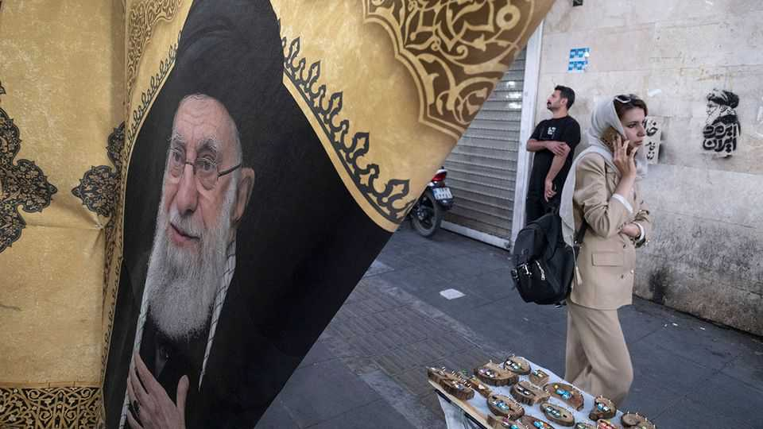
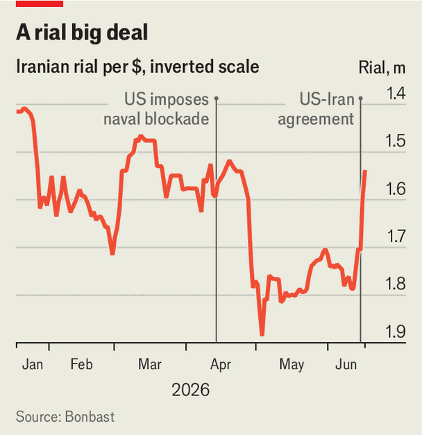

Iran’s battered economy will take years to recover from the war
Its leaders want sanctions relief and aid for reconstruction
June 18th 2026

The deal was a long time coming—far too long for many Iranians. American and Israeli bombs have damaged their infrastructure and industry; American warships have blockaded their ports. The memorandum of understanding (mou) between America and Iran sets out 60 days for negotiations over a final agreement, with big incentives (perhaps even $300bn in investment) if Iran co-operates. But how much it gets may become a sticking-point.
For many Iranians, the pain has been acute. Last month inflation was 84% year on year, more than twice the rate in January. Food-price inflation, at 131%, was even higher. The blockade has affected imports, too. Some 3,000 containers destined for Iran have stacked up in Pakistani ports since mid-April, and grain shipments to Bandar Imam Khomeini, Iran’s main hub for agricultural goods, have fallen by 40%. Poor Iranians are paying for meat and bread in instalments. Gholam-Hossein Mohammadi, the deputy labour minister, has said as many as 2m people have lost their jobs—up to 7% of the workforce. On May 18th Donya-e Eqtesad, an Iranian newspaper, reported that the number of applications for a single vacancy on JobVision, a hiring site, had doubled to 360. In late May Masoud Pezeshkian, the president, told businessmen in Tehran that “the main field of confrontation today is the economy and people’s livelihoods”.
Some of this harm is self-inflicted. The regime cut off access to much of the global internet during protests in January and began restoring access only in May. Digikala, Iran’s biggest online retailer, laid off 3% of its staff. But American and Israeli attacks on factories, refineries, steel mills and—most recently—Iran’s biggest petrochemical complex caused most of the damage. Iran has suspended petrochemical exports (one-third of its non-oil exports) since Israel first hit the site in April. Rystad Energy, a consultancy, reckons repairing energy facilities alone could cost up to $19bn. The Foundation for the Defence of Democracies, a hawkish American think-tank, puts the total bill at about $144bn—roughly half of Iran’s gdp.
With the mou now signed, America is meant to lift its blockade and offer sanctions relief. The end of that blockade is the first essential step. It has choked Iran’s oil exports and was intended to starve the Islamic Revolutionary Guard Corps (IRGC), Iran’s military elite, of its main source of cash. Vortexa, a ship-tracking firm, says Iran’s oil exports in May fell to 209,000 barrels a day, an 84% drop from April. On the eve of the deal, Iran’s usable crude storage was 83% full, according to Kpler, a data provider. Tanker loadings at Kharg island, Iran’s main export hub, dipped sharply, but could soon resume. The mou may also waive sanctions on Iran’s oil shipments. The regime is keen to charge tolls—levied under the guise of service fees—for ships passing through the strait.

But the biggest reward is said to be a $300bn investment package to rebuild Iran’s economy—a sum equal to its annual gdp. J.D. Vance, Mr Trump’s vice-president, has said that this is “the sort of thing they could have access to” if the talks proceed to the liking of America. The rial, which had lost a quarter of its unofficial value this year, has rallied since the mou was announced (see chart).
On June 17th, however, Mr Trump denied that America would invest in the scheme (and said he had not asked Gulf states to create one). The proposal is typical Trump: offer to get cash flowing and the rest will sort itself out. Yet sanctions on Iran, which have long deterred foreign investors, would need to be unwound for them even to consider such commitments. And it would face fierce opposition from hawks in America. Lindsey Graham, a Republican senator, has compared the idea to “a Marshall Plan for Germany with the Nazis still in charge”.
Mr Trump will have to tread carefully. Much of Iran’s industry is owned by the irgc, hence large-scale investment would mean lifting sanctions on the regime’s most hardline and powerful faction. Far milder sanctions relief enraged Republican critics of Barack Obama’s nuclear deal with Iran a decade ago. The regime could profit from its Trumpian deal. But the needs of the country’s immiserated population will be secondary. ■
Editor’s note: This story has been updated.
Sign up to the Middle East Dispatch, a weekly newsletter that keeps you in the loop on a fascinating, complex and consequential part of the world.